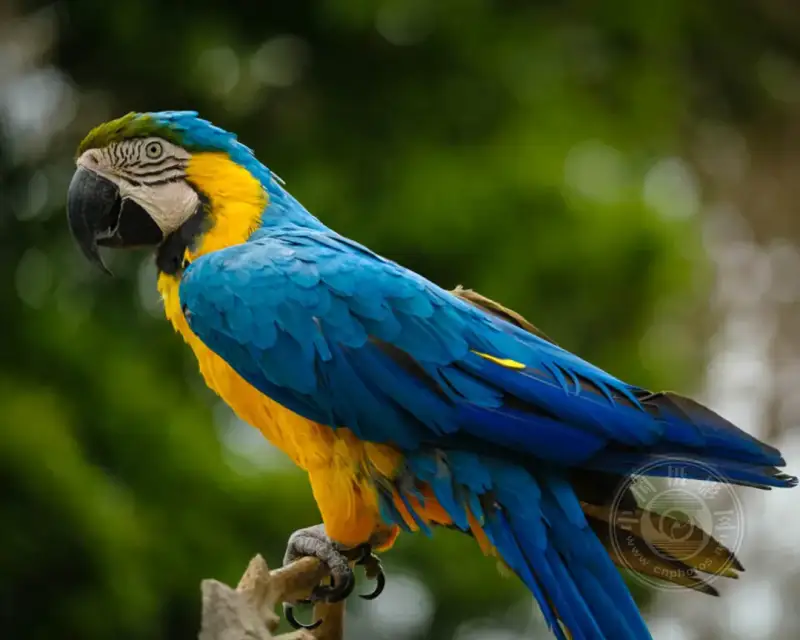
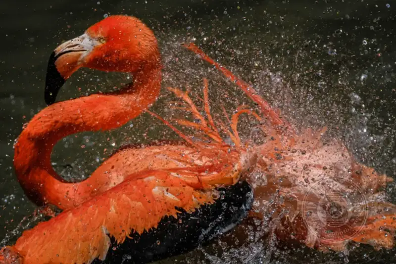
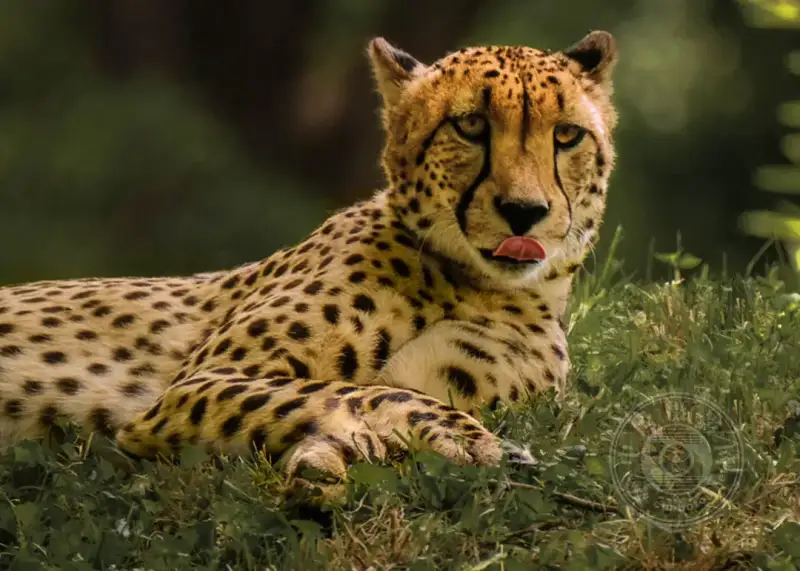
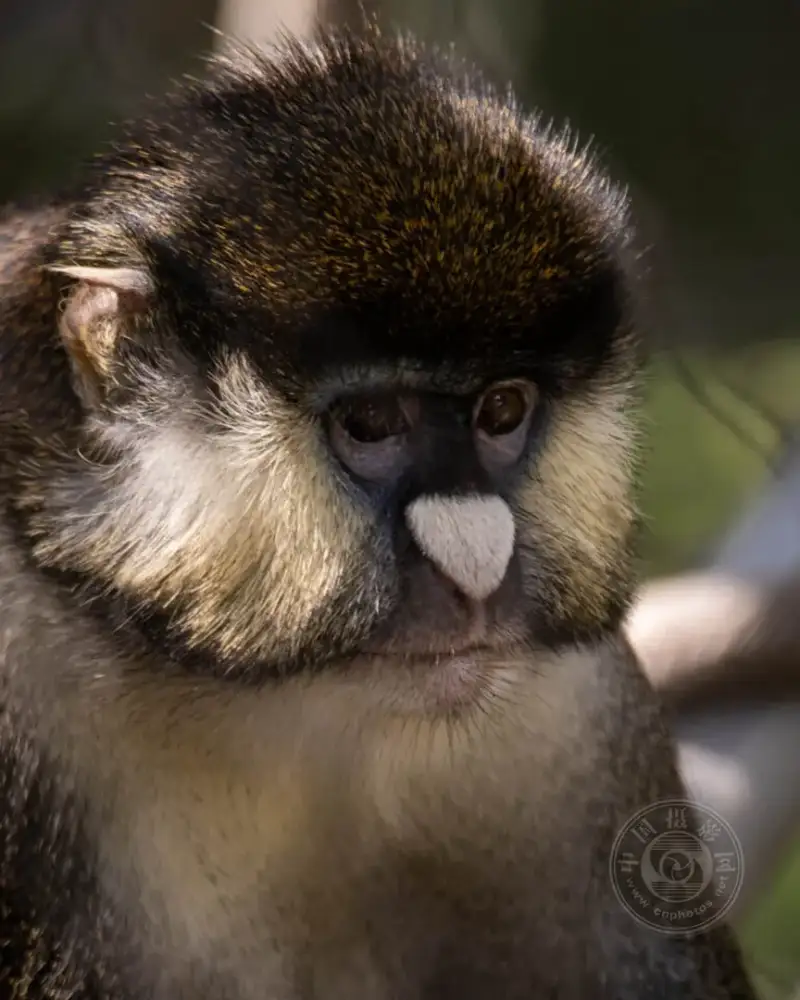
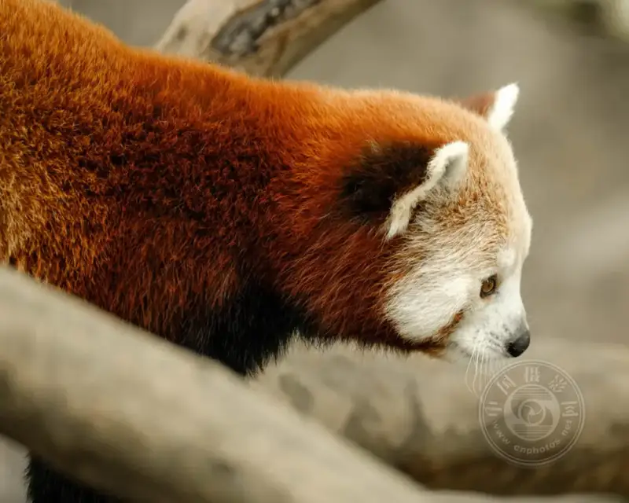
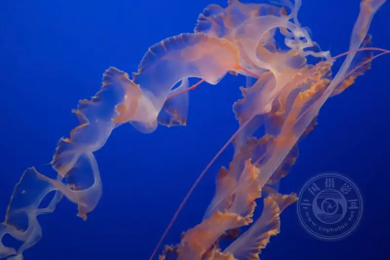
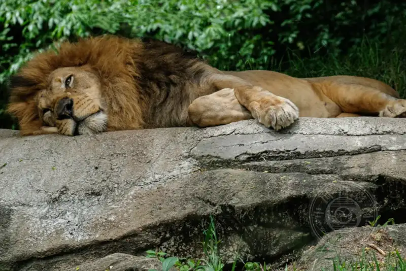
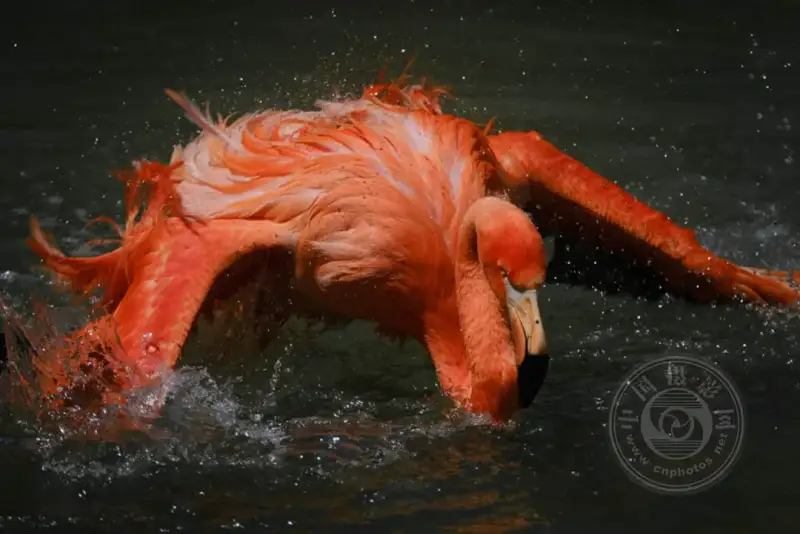
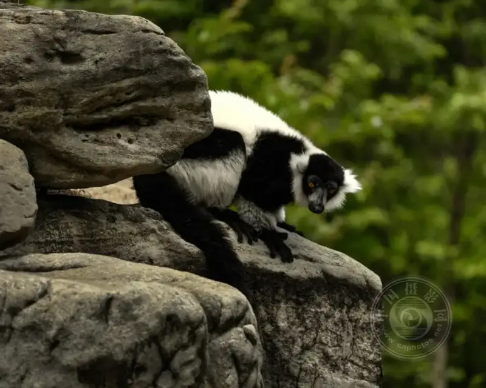
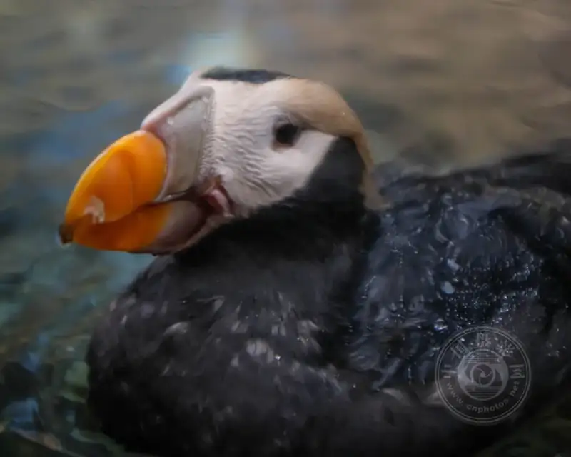

Published: 2023-01-30
Source link: https://www.cnphotos.net/academy/show-112.html
When it comes to zoo photography, the first question may be, why do I need to shoot wildlife at a zoo?
Shooting wildlife at a zoo is often debated among photographers. Some see it as a great chance to photograph animals they would not otherwise see up close. Others call it cheating. Many wildlife contests do ban zoo photos, and passing off a captive animal as wild is cheating. But for me, a zoo is a great chance to photograph animals we usually cannot reach.

I shot this bird from three angles. This angle was the only one that hid the band on its leg.
X-T3 + XF50-140mmF2.8 R LM OIS WR @ 140mm, ISO 3200, 1/3500, f/2.8
I also suspect the reason many photographers shy away from the zoo is that capturing a good image of a zoo animal is a different kind of challenge from shooting one in the wild. The animal waits to be photographed, and you must deal with the setting and separate the animal from the less natural habitat.

X-T3 + XF50-140mmF2.8 R LM OIS WR + 2x @ 280mm, ISO 200, 1/1500, f/5.6
Choose the right zoo
My children love small animals, and every time we visit a new city they want to go to the zoo. After dozens of zoos over the years, it is clear that not all of them work for photos. The species may differ, but more importantly, the kind of enclosure varies a lot.
Land animals are easiest to make look natural, but the downside is that there are usually many other visitors around. So the spot and the time you see the animal are not fully in your control.
More zoos are designed as open enclosures. The downside is that they often rely on height to contain the animals. The fence sits below the viewing area, the wall is waist high, and the enclosure is beneath, so you see the animal clearly but only from above.
Animals behind glass give a close, fairly unobstructed view, though reflections and glare bring challenges that we cover later.
The type of fence matters, but the environment also matters. Many zoos build great enclosures and give the animals a beautiful, natural habitat. The better and more natural the habitat, and the more the animal lives in it, the more likely you are to get a natural photo.
One more thing to learn in advance is the special tours and experiences your zoo offers. They usually cost extra, and you may find the price worth the close contact with the animal you want to shoot. Also, though most zoos welcome photos, they usually forbid, or require a special permit for, images taken for commercial use.

A very long focal length (800mm, 400mm with a 2x teleconverter) puts the fence in the background fully out of focus.
X-Pro2 + XF100-400mmF4.5-5.6 R LM OIS WR + 2x @ 800mm, ISO 1600, 1/125 , f/11.0
Use a long focal length and a wide aperture
You do not need fancy, expensive gear for a good photo. At the zoo, the animals do not move fast, and they are kept in an enclosure built for the best viewing. So a long focal length and a wide aperture give a clear advantage in zoo photography. They let you shoot with a shallow depth of field.
A shallow depth of field blurs the background and hides a less realistic enclosure. It matters, because it lets you shoot through the fence. When the animal is behind bars, mesh, or railing, use your longest lens and widest aperture and focus on the animal. If the fence is far enough beyond the focus point, it becomes invisible in the image.
Both the focal length and the aperture affect depth of field. The longer the focal length and the wider the aperture, the shallower the depth of field. The shallower it is, the more likely the fence stays out of focus while the animal is sharp.
It helps if the animal is far enough inside the enclosure that, when you focus on it, the fence sits outside the focus area. The shallower the depth of field, the less distance you need between the animal and the fence for the fence to blur. If the animal rests right against the front of the cage, this will not work, but I am often surprised at how easily I can shoot through the cage.
As a note, you may need to focus on the animal by hand, because the cage in front often confuses the camera's autofocus.

This monkey, shot at the San Diego Zoo, was fully inside a mesh cage.
A long focal length (280mm, 140mm with a 2x teleconverter) and a fairly wide aperture (f/5.6) gave a shallow enough depth of field to blur the mesh cage.
X-T3 + XF50-140mmF2.8 R LM OIS WR + 2x @ 280mm, ISO 200, 1/60, f/5.6
Watch your background: control your angle
The simplest, and most obvious, way to get a good, natural animal photo is to control the angle.
You rarely see the animal from a full 360 degrees, but most zoos offer several viewing spots. Sometimes moving to one side or shifting your position a little makes a good photo. Changing your posture, up or down, also makes a big difference. Often you can use grass or the sky as the background instead of the fence. This is another reason a zoom lens helps.

I chose the highest of several angles, which let me see the raccoon directly, even though it was in a tree.
At other zoos I have visited, I could not find an angle like this, so I was glad to find one that gave me eye level.
X-Pro2+XF100-400mmF4.5-5.6 R LM OIS WR@400mm, ISO 640, 1/100, f/5.6
Use a polarizing filter
Many zoo enclosures are closed in glass, so you can see the animal up close from a natural spot. The downside is that shooting through glass is harder than it looks. If the glass is very thick or dirty, your camera may not autofocus, and you may focus by hand. The long focal length and wide aperture we mentioned also help blur the dirty glass. But by far the biggest challenge of glass is glare and reflections.
A polarizing filter helps cut unwanted reflections. Also, if you shoot through glass, wear plain dark clothing. Dark clothes absorb light instead of bouncing it back onto the glass, which reduces reflection and glare. These tips also apply to aquariums.

Jellyfish tentacles shot through glass at the Baltimore National Aquarium.
X100F @ 23mm, ISO 3200, 1/280, f/2.0
Choose the time (and weather) with care
Like most outdoor photography, shooting early or late in the day gives nicer light. Of course, unlike landscape photography, you are limited by the zoo's opening and closing hours. If you find yourself shooting in direct sun, move to shade. In enclosures with good tree cover, the overhead light is less of a problem. One thing to watch: bright sunlight reflected off railing and fence makes them hard to photograph.
An overcast day is the best time to visit a zoo. Under thick cloud, you avoid harsh high-contrast light, and there are fewer visitors. A cloudy day usually brings cooler temperatures, and animals are often most active when it is cooler.

Smithsonian's National Zoo, Washington.
DC X-Pro2 + XF55-200mmF3.5-4.8 R LM OIS @ 200mm, ISO 200, 1/125, f/9.0
Look for dynamic poses
When you start shooting zoo animals, simply making a good animal portrait is challenge enough. Finding a lit animal, shooting it from a workable angle, removing any trace of the cage, and finding a way past railing, mesh, glass, or other barriers is a lot of work. But once you have the portrait, it is time to go after dynamic poses. A dynamic pose is not only motion, though motion is great. It also includes a tilted head, body, or wing, anything that makes the image more than a close-up of the animal's face. A free-flight bird enclosure is a good place to start catching dynamic poses. The secret of a dynamic pose is patience: find the right animal, and wait.
Animals are often more active when the weather is a little cool. At a sunny noon you may only get photos of them asleep in the sun. Pick an overcast day, and the animals are more active. A mild winter also helps, as the animals come out to enjoy the relative warmth and are more likely to give you interesting motion and poses.

As I was about to leave the San Diego Zoo, the calm flamingos suddenly decided to put on a show.
X-T3 + XF50-140mmF2.8 R LM OIS WR + 2x @ 248.6mm, ISO 200, 1/1800, f/5.6
Stay flexible
The easiest way to bring home good animal photos is to be flexible about which animal you shoot. You may walk past a cute, playing monkey that would be perfect if it were not right against the cage rail. A lion sleeps half in sun and half in shade, and the harsh light and extreme range ruin an otherwise good shot. The elephant would be perfect but for the bright red fence in the background. The penguins are active as they play in front of fake rocks and a colorful mural.
In the end, you find that everything about an animal lines up into a great frame. But if you arrive set on the perfect photo of the elephant (or the monkey, or the lion, or the penguin), you will leave disappointed. In most zoos, some enclosures will never give a good animal photo. If that is the animal you really want, you are better off going to another zoo. Every zoo has enclosures that are harder to shoot than others. If that is the case, and the animal is one you really want, you can wait patiently until all the pieces fall into place for a great photo.
But in most cases, the best way to shoot a zoo is to stay flexible. Make your goal to bring home a few good animal photos, not a specific animal. If you stay flexible, you will find that, with practice, you quickly pass by the animals that will not yield a good shot that day.

X-Pro2 + XF100-400mmF4.5-5.6 R LM OIS WR @ 400mm, ISO 1600, 1/1600, f/5.6
Change the way you shoot
So far, I have assumed the point of shooting a zoo is to get good, natural animal images. But that is not the only way. A zoo is full of interesting people, and pointing your camera at the observers can give fun, unique images. Maybe you do not want to make the animal look wild, but want to tell the story of its captivity. Many zoos have interesting plants and leaves, or interesting objects and exhibits, that also photograph well. When you shoot a zoo, taking detail photos, textures, or abstract images (of animals or other things) is also a fun assignment for yourself.
One year, I challenged myself to shoot a zoo with only a Fujifilm X100 series camera with its fixed 23mm lens. This was the opposite of how I usually shoot a zoo, but it pushed me past my usual telephoto approach and led to different, unique images.

This puffin was shot at a zoo with a Fujifilm X100 series camera. Without a zoom, I could not reach the shallow depth needed to blur the glass, so I dabbed a little water on it for a painterly effect.
X100F@23mm, ISO 1600, 1/240, f/2.0
Whatever your subject or gear, I encourage you to visit your local zoo and see whether you can bring home some beautiful, unique photos.
Is a zoo a place you love to shoot, or one you usually avoid? Share your thoughts in the comments.